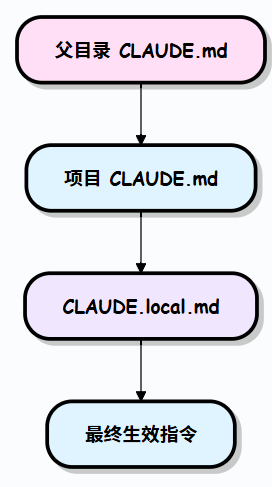

claudecode
ClaudeCode
参考链接：Claude Code 项目目录结构 | 菜鸟教程
避免权限请求
使用ClaudeCode时，会发现它总是请求各种命令的权限，非常烦人。可以通过以下方式让他获取所有工具的权限
1 | claude --allow-dangerously-skip-permissions |
基本结构
claudecode有多种概念，比如skill、subagents…他们基本上都作为独立的文件存在于对应的目录，Claude Code 会在特定位置查找对应的配置文件
1 | your-project/ |
启动 Claude Code 时，它会按以下顺序加载配置：
- 读取规则 (
~/.claude/rules/*.md) - 这些规则适用于所有交互 - 加载钩子 (
~/.claude/settings.json) - 在特定事件时运行 - 注册代理 (
~/.claude/agents/*.md) - 可供委派使用 - 索引技能 (
~/.claude/skills/*) - 在调用时准备就绪 - 启用命令 (
~/.claude/commands/*.md) - 可通过斜杠语法使用 - 连接 MCPs (
~/.claude.json) - 链接到外部服务
CLAUDE.md
CLAUDE.md 是一个放在项目根目录的 Markdown 文件，Claude Code 在每次会话开始时都会自动读取。
CLAUDE.md 会成为 Claude 系统提示的一部分，使每次对话都能预先加载项目上下文，不再需要重复解释基本信息。
一份好的 CLAUDE.md 应该包含以下内容：
- 项目概述
- 常用命令
- 项目目录说明
- 编码规范
- 架构约束与禁止事项
- 开发环境说明
以下是一份典型的 CLAUDE.md 结构示例：
1 | # 项目名称 |
CLAUDE.md可以通过/init生成，但是它生成的不一定好，CLAUDE.md文件一定是跟我们软件开发一起进行迭代的。
修改方式：
- 1.直接用编辑器修改该文件
- 2.
/memory指令自动打开编辑器修改该文件 - 3.通过
# xxxxx的方式来在线修改该文件
Claude 会自动递归读取父目录中的 CLAUDE.md。在子包内可再放一个 CLAUDE.md，Claude 会将两层指令合并理解。

1 | my-monorepo/ |
当项目已经有了规范文档（如 API 设计规范、数据库设计文档等），不需要将内容复制到
CLAUDE.md中，直接用@文件路径引用即可引用的文件路径是相对于
CLAUDE.md所在目录的相对路径。引用的文件内容会占用上下文窗口，避免引用过大的文件（建议单个引用文件不超过 500 行）。
1 | Claude 读取CLAUDE.md时会自动加载引用的文件内容： |
随着项目的演进，CLAUDE.md 也需要同步更新。以下时机应该触发更新：
- 更换了包管理器或构建工具
- 添加或移除了重要的依赖库
- 制定了新的编码约定
- 发现 Claude 反复犯同一类错误（说明需要在
CLAUDE.md中补充说明） - 某个文件或模块变得不能随意修改（增加到注意事项中）
commands
目录下每个 .md 文件自动映射为一条 /project:文件名 命令
.claude/commands/ 是团队将重复性任务标准化的核心机制
| 文件名 | 对应命令 |
|---|---|
review.md |
/project:review |
fix-issue.md |
/project:fix-issue |
deploy.md |
/project:deploy |
1 | 示例：commands/review.md |
1 | 示例：commands/fix-issue.md（带参数） |
参数传递： 命令文件中可使用
$ARGUMENTS占位符接收调用时传入的参数。
Skills vs Commands 的区别：
- Commands需要用户主动输入斜杠命令触发
- Skills由 Claude 根据上下文自动判断是否调用
rules
长期稳定执行的行为约定，可以放在CLAUDE.md中，但是为了避免臃肿，所以最好单独放到rules下
不管是rules还时CLAUDE.md本质上都是promt，claude不一定完全遵守，如果是某些一定得达成的命令，最好设置一些hooks来检查
1 | 示例：rules/code-style.md |
skills
定义
Skills 是更高级的复合工作流。当 Claude 判断某个任务适合某个 skill 时，会自动读取并执行对应的 SKILL.md，无需手动调用。每个 skill 是一个子目录，目录内包含 SKILL.md。
1 | 示例：skills/security-review/SKILL.md |
skill本质上是给AI可复用的功能插件，类似于我们写代码时的一些第三方库（比如OpenCV让C++直接具有了图像处理的能力，而不必手动从底层实现这个功能）。它本质上是把“prompt + 规则/最佳实践 + 脚本 + RAG这样一整个工作流打包给AI，这样就不必每次都重新教给他。此外，通过给一些脚本，让AI从只会聊天变得能操作你的电脑，靠拢真正的Agent
1 | skill: |
system prompt、RAG、workdflow我觉得本质上都是一些文字，有什么区别呢？
- system prompt：必须遵守啥
- 必须符合 Linux kernel coding style
- 使用 devm_* API
- 错误处理必须完整
- RAG：参考啥
- 公司代码模板
- 寄存器配置说明
- workflow：该能力的工作流程
- 确定的步骤：解析需求 -> 查 RAG -> 生成代码 -> 调用 tool -> …
为什么不能只用prompt或者RAG呢？
- 如果全写进prompt里，会消耗很多token，并且不好维护，新规范难加进去
分类
目前的skill有以下几类：
- coding类：通过给一些预置的非常好的prompt和规则，改进AI的代码风格、强制进行code review等操作，增强AI的写代码的能力
- Automation类：这类skill一般还会提供一些脚本，从而让他能操作电脑自动化地完成一些事情，比如浏览网页、PDF阅读、环境部署、运维等等
- 私有知识类：要让AI学习到一些规范或者预训练时没看过的小众知识（比如公司内部数据）第一时间可能想到的是RAG，但RAG只是让AI外挂一些记忆，并不能给AI操作的能力，skill在RAG的基础上提供一些工具，从而让AI不仅知道如何做，而直接可以动手帮你做
安装
目前skill已形成生态，ClaudeCode的skill安装有3种方式，类似一种AI的包管理系统
方式一：
- 通过
/plugin直接从插件市场安装（官方方法）
方式二：
- 手动把skill文件放到
~/.claude/skills下（全局安装）或者放到项目的.claude/skills下（项目安装）
方式三：
- 使用
npx种的skills这个CLI工具进行安装。比如：
1 | npx skills add alchaincyf/zhangxuefeng-skill --agent claude-code |
后边一定要加
--agent claude-code不然ClaudeCode没法自动识别
该方法本质上是自动从git下载skill文件，然后将其放到.claude/skills种
验证是否安装成功
使用/skills命令可以显示已安装的skills以及其安装位置

常见skill总结
MCP
MCP（Model Context Protocol）本质上和HTTP、RCP类似，都是一种协议。MCP主要用于MCP Client（AI）和MCP Server（外部工具适配层）之间通信，从而让AI能够以一种标准的方式调用外部工具（比如git、word…）
为什么要用MCP
其实让AI调用外部工具确实不需要这样一个协议，可以为某个工具写一些固定的shell脚本就行了。但是这样不统一，并且很难复用。所以设计者就提出了MCP这个协议，把AI调用外部工具以及外部工具如何暴露接口给AI都进行了标准化 + 可插拔化 + 可扩展化
MCP Server
MCP Server可以理解为一个包装层，它给现有的应用进行封装，让这些工具具备MCP通信的能力，从而可以被AI调用。如果没有这层的话，我们如果想让这些工具能够被MCP Client调用，就得在这些工具内部实现MCP协议，那太麻烦了，每个工具比如git什么的都得从源码改动，这也不现实，所以设计者就引入了这个抽象层
MCP Server到底是daemon进程吗，还是只是一些代码？
MCP Server是一类遵循 MCP 协议的工具程序集合，他不和Web Server一样必须是个守护进程，它可以是：
- daemon
- CLI
- script
- remote service
安装
要让AI具有调用外部应用的能力，一般需要安装的是MCP Server
下载工具
MCP Server的代码通常是js写的，所以通npm或者npx包管理工具下载，也可以直接去github下载源码
1 | npx @modelcontextprotocol/server-filesystem /your/path |
client配置
下载完代码后，还需要告诉AI这些MCP Server如何运行，ClaudeCode需要写个MCP Config文件（类似VSCode的配置文件）ClaudeCode启动时会读取这个配置文件，预启动MCP Server，在AI进行工具调用时，直接和这些MCP Server通信从而调用
1 | { |
使用场景
git操作、连接数据库、接入公司内部系统、控制浏览器
Hooks
Hooks 是在特定事件发生时自动触发的自动化规则
工作原理: 就像”如果…就…”的条件语句
- 监听事件: 比如文件编辑、保存、工具使用等
- 触发条件: 匹配特定文件模式或操作类型
- 执行动作: 自动运行命令或检查
1 | { |
常见用途:
- 自动格式化代码
- 运行测试
- 编译检查
- 阻止编辑敏感文件
Subagent
定义：可以被主Agent派遣的子智能体。在复杂任务中，主代理将任务委派给对应专家角色（子Agent），实现多代理协作。子代理在隔离上下文中运行并将执行的摘要返回，从而节约主对话的上下文空间，且拥有独立的权限范围。当 Claude 判断你的请求符合某个子代理的描述时，会自动将任务委托给它，由子代理独立完成后返回结果
通俗点理解就是被限制了行为边界、拥有独立上下文的一个新对话，结果以摘要的形式返回给主对话
子代理只接收自身的系统提示和基础环境信息（如工作目录），不会继承完整的 Claude Code 系统提示，这保证了行为的纯净和可控。
工作原理：
- 独立运行：在独立的上下文中与主对话并行工作
- 专业领域：通过一些promt给其定义角色，以及能使用的工具（权限），从而限制其行为边界
1 | 示例：agents/code-reviewer.md |
头部完整字段说明：
name |
必填 | 唯一标识，也是显式调用时的名称。格式：小写字母 + 连字符，如 code-reviewer |
|---|---|---|
description |
必填 | 最重要的字段，Claude 是否以及何时自动调用该代理完全依赖于此，务必写清楚使用场景 |
tools |
可选 | 工具白名单；设置后只能使用列出的工具，MCP 工具也会被排除 |
disallowedTools |
可选 | 工具黑名单；继承主对话全部工具，但排除列出的工具（MCP 工具保留） |
model |
可选 | 指定模型，可填 haiku、sonnet、opus、完整模型 ID，或 inherit（默认，继承主对话） |
permissionMode |
可选 | 权限行为控制，见下方权限模式章节 |
memory |
可选 | 持久记忆范围：user / project / local，见下方记忆章节 |
background |
可选 | 设为 true 时，该代理始终以后台方式运行（不阻塞主对话） |
isolation |
可选 | 设为 worktree 时，在临时 git worktree 中运行，与主仓库完全隔离 |
skills |
可选 | 在此代理启动时自动加载的 Skills 列表 |
hooks |
可选 | 生命周期钩子：SubagentStart / SubagentStop / PreToolUse / PostToolUse |
如何调用
1.自动委托：Claude 会根据 description 字段自动判断任务是否适合某个子代理，无需在提示中手动指定：
1 | 帮我检查最近的代码改动质量 |
2.显式调用：在提示中明确指定要使用哪个代理：
1 | 让 code-reviewer 子代理检查最近的改动 |
典型使用模式
1.隔离高输出任务：将产生大量中间输出的任务（如运行测试、扫描日志）放到子代理中，主对话只接收精简的结论：
1 | 使用子代理运行所有测试，只返回失败的测试和根因分析 |
2.并行研究：同时启动多个子代理处理不同模块，大幅缩短分析时间：
1 | 并行使用子代理分别分析认证模块、数据库模块和 API 模块，汇总后给出整体架构建议 |
3.串联子代理流水线：将复杂工作流拆分为多个专职代理，按顺序传递结果：
1 | 先用 code-reviewer 找出问题，再用 optimizer 子代理修复这些问题 |
串联工作流的设计原则：每个代理只做一件事，并通过清晰的”输入 → 处理 → 输出 → 交接信号”定义接口。以下是一个生产实践中的三段式流水线示例：
- pm-spec：读取需求，生成工作规格，确认后标记
READY_FOR_ARCH - architect-review：验证设计约束，产出架构决策记录（ADR），标记
READY_FOR_BUILD - implementer-tester：实现代码和测试，更新文档，标记
DONE
通过 SubagentStop 钩子监听状态文件，自动触发下一个代理，无需手动干预。
4.并行代码审查
1 | 同时启动 style-checker、security-scanner、test-coverage 三个子代理并行审查， |